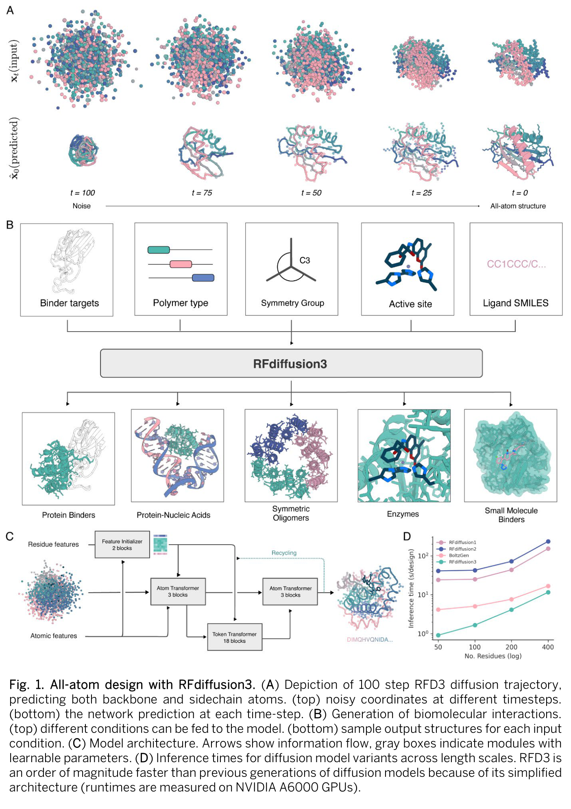
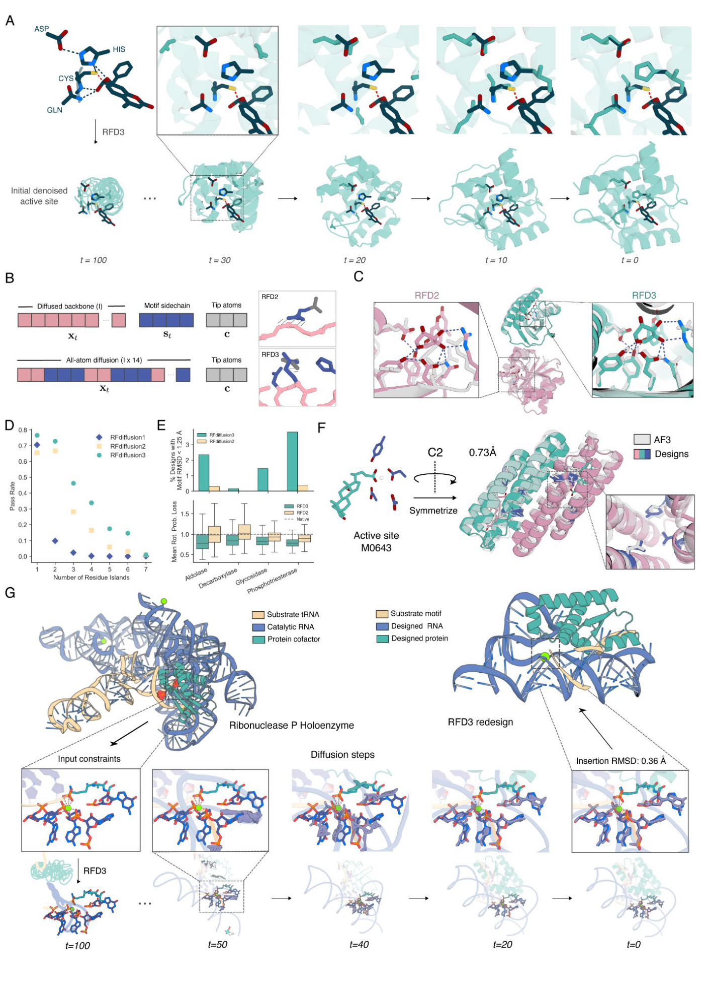
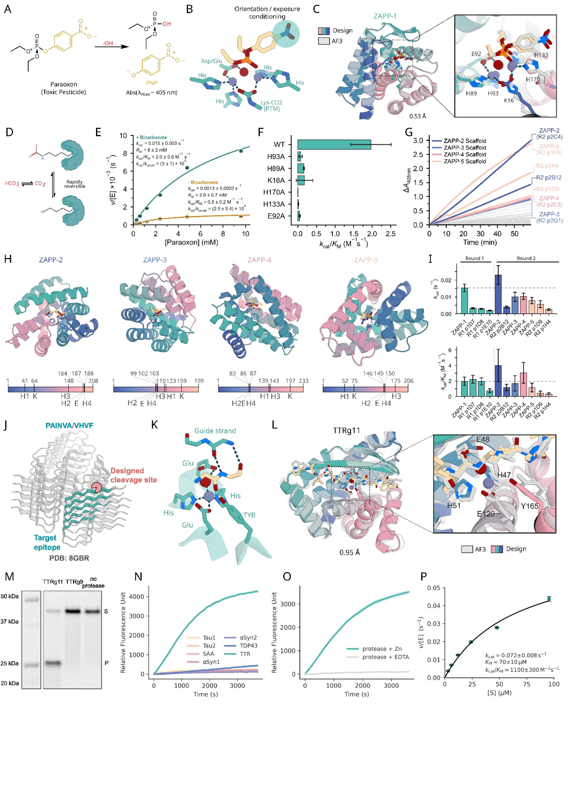
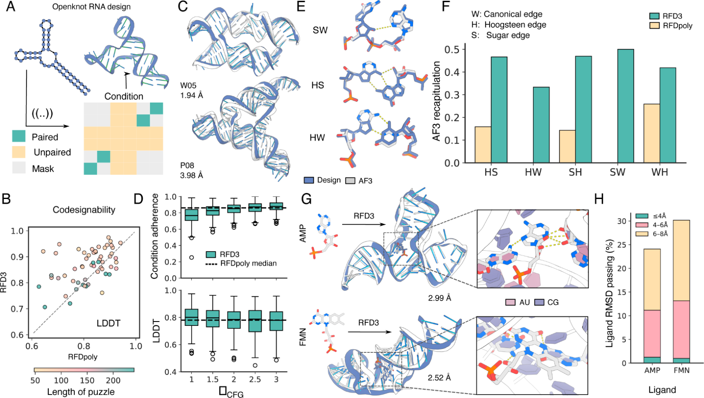

RFdiffusion3：给定功能原子的几何关系，怎样长出能够催化的蛋白质
论文原文 ↗原文：Jasper Butcher、Rohith Krishna、Raktim Mitra 等，Atomic functional site scaffolding in biopolymers with RFdiffusion3，Science，2026。论文｜
设计一个能折叠的蛋白质，与设计一个能催化反应的蛋白质，要求并不相同。前者需要整体结构稳定，后者还要把金属、底物及多个氨基酸上的关键原子放到合适的位置：谁配位金属，谁提供酸碱作用，谁形成氢键，底物哪一部分埋在口袋里、哪一部分朝向溶剂，都可能影响功能。
旧一代蛋白质生成方法主要以氨基酸残基为单位。RFdiffusion2已经能把少数关键侧链原子作为约束，但其余结构仍主要以残基层级生成，要同时协调大量原子相互作用仍然困难。RFdiffusion3（RFD3）把骨架和侧链原子一起生成，让功能位点的原子约束成为整个生成过程能够直接处理的信息。 论文将这一思路扩展到蛋白质、RNA以及二者的复合物，并用两类从头设计的酶进行了实验验证。
一、输入是什么：先给出功能几何，而不是先写出完整蛋白序列
假设目标是围绕一个双金属催化中心设计酶。输入可以是金属位置、底物或过渡态中部分原子的坐标，以及附近几组催化侧链原子的几何关系；还可以要求某些原子形成氢键、埋入内部或暴露在溶剂中。其他条件包括蛋白长度、结合对象或对称性。
这里的功能基序，就是执行功能所需的那一小组局部原子安排。围绕它搭建其余大分子结构，称为基序支架设计。对于催化设计，研究者还会构造理论酶活性中心（theozyme）：用一个小模型规定理想反应几何，再寻找能够承载它的完整蛋白质。
重要的是，输入可以不指定这些催化残基最后出现在序列的第几位。模型需要在生成过程中同时确定整体折叠、侧链构象，以及哪些序列位置来承担这些功能。

图1｜A展示从原子噪声到全原子结构；B展示不同条件与设计对象；C是原子层与残基层之间的信息流；D比较生成时间。
二、原子怎样在一个统一模型里被生成
先为不同残基安排统一的原子槽位
完整序列尚未知晓时，一个问题是：不同氨基酸的侧链原子数不同，怎样让模型从同一种输入格式开始？作者为每个蛋白质残基预留4个骨架原子和10个侧链原子槽位；较小侧链用虚拟原子补齐。核酸也采用固定槽位，分别容纳糖—磷酸骨架与碱基，统一格式最多使用23个原子槽位。
这些槽位让序列类型和空间结构可以共同变化。真实原子与补齐用的虚拟原子按模型表示区分，不同类型的大分子因而可以进入同一套生成框架。
从噪声开始，原子层保留细节，残基层组织整体
训练时，作者将蛋白质与核酸结构不同程度地加噪，让网络在一部分功能条件下恢复骨架和侧链坐标。数据包含PDB中的蛋白质、核酸及小分子复合物，也加入高质量预测结构；随后再增加核酸与结合任务的训练比重。
生成时，未固定的原子从噪声状态出发，关键功能原子和结合对象提供空间参照，网络逐步预测坐标更新。这个过程中的“时间”是去噪进度，不是分子动力学时间。
模型采用原子层与较粗粒度残基层结合的Transformer结构。注意力在这里用于决定当前原子或残基应该参考哪些其他位置的信息。原子层重点处理当前空间中接近的原子与局部作用，随后通过交叉注意力把细节汇集到残基表示；残基层组织更大范围的结构关系，再将信息送回原子层，输出坐标更新。
作者针对设计任务简化了条件处理模块，将相关Pairformer从48层压缩到2层，并省去较昂贵的三角更新，最终模型约1.68亿参数。每个去噪步骤还可以重复利用内部计算，以增加推理时的处理量。图1D显示，这套架构在典型长度蛋白的生成中明显快于前代模型。
固定的是局部目标，生成的是承载它的整个环境
对于不指定序列位置的催化基序，作者把固定原子作为附加的条件标记加入模型，训练网络让生成结构中的相应原子与目标重合。由于所有骨架和侧链都处在全原子表示中，网络可以在同一次生成中寻找哪些残基位置和侧链构象适合承载它们。

图3｜A、B展示固定功能原子与全原子去噪怎样衔接；C—E比较催化几何与通过率；F、G分别展示对称酶和蛋白—RNA混合位点设计。
在41项酶原子基序任务中，RFD3有37项优于RFD2。对于含六个催化残基的四种较复杂活性位点，RFD3也产生了更多在结构复预测后仍保持目标几何的候选，催化侧链构象更接近天然蛋白中常见的合理状态。
完整蛋白设计流程还包含后续步骤：RFD3生成原子结构后，使用ProteinMPNN或能够考虑配体环境的LigandMPNN重新设计氨基酸序列，再用AF3、RF3或Chai-1复预测结构，挑选能够保留设计几何的候选。因此，实验结果来自原子结构生成—序列设计—结构复预测—实验测试的整条流程。
三、两类酶实验：复杂位点怎样转化成真实催化
1. 双锌磷酸三酯酶：把六个催化残基与修饰赖氨酸组织在一起
天然磷酸三酯酶用六个催化残基组织双金属中心，其中一个赖氨酸还需要发生氨基甲酰化：侧链结合CO₂后形成可以连接两个金属的基团。这个位点不只是“在口袋里放两个锌离子”，还要求多个在序列中分散的残基共同形成正确几何。
作者以有机磷化合物paraoxon水解为模型反应，通过量子化学构建过渡态附近的局部几何，并枚举相应配位与侧链构象作为RFD3输入。生成时还要求底物疏水部分埋入蛋白、离去基团朝向溶剂。随后经过LigandMPNN序列设计和结构复预测，选出96个构建体进行首轮实验。

图4｜A—I是磷酸三酯酶：从理论活性中心到活性、修饰与残基替换实验；J—P是TTR来源肽段蛋白酶：从底物识别几何到切割、选择性与动力学。
首轮96个设计中发现4个活性候选，来自同一个基础支架。最佳的ZAPP-1具有多次周转催化能力，其kcat为0.015 ± 0.003 s⁻¹，kcat/KM为2.0 ± 0.6 M⁻¹ s⁻¹。kcat表示底物足够时每个酶每秒能完成多少次反应；kcat/KM综合反映低底物浓度下的催化效率。
作者还围绕设计中的具体化学作用做了实验：补充碳酸氢盐促进赖氨酸氨基甲酰化后，活性提高；去掉这一补充条件，kcat下降约11倍。逐一替换六个催化残基，都使活性完全或显著下降。这些比较把观测到的催化与最初设计的双锌位点接了起来。
第二轮采用从ZAPP-1进一步研究得到的理论活性中心，筛选192个设计，在四种不同支架上找到活性候选。ZAPP-2的kcat达到0.023 ± 0.006 s⁻¹。图4H尤其值得看：同一组催化功能在不同折叠中被安排到不同序列位置和顺序，显示模型能够围绕同一个几何问题给出多种结构解。
2. TTR来源肽段蛋白酶：同时设计催化中心与底物识别沟槽
另一条路线针对转甲状腺素蛋白TTR中的一段天然来源肽序列。作者将已知金属蛋白酶的催化几何，与底物骨架及稳定底物所需的氢键关系组合，交给RFD3。模型既要搭出催化残基，也要形成适合这段底物构象的沟槽。
第一轮同样设计96个酶。先将酶与底物肽连接在同一个融合构建体中测试，称为顺式切割；其中56个在规定孵育条件下出现超过10%的切割。随后让活性候选作用于独立的报告底物，即反式切割，进一步筛出TTRg4、TTRg10、TTRg11。
最佳候选TTRg11可在1小时内切割大部分报告底物，质谱确认了目标切割位置。与另外六种其他淀粉样相关蛋白来源序列比较时，它对目标TTR肽段表现出更高活性；去除锌离子后活性明显下降。其kcat为0.072 ± 0.008 s⁻¹，KM为70 ± 10 μM，kcat/KM为1100 ± 300 M⁻¹ s⁻¹。
这条路线的推进在于，输入不仅规定催化原子，还规定天然来源底物怎样被支架识别；生成结果在首次96个构建体的实验中就出现了可进一步表征的催化剂。
四、同一原子表示怎样延伸到RNA设计
RNA功能同样依赖局部原子几何，包括碱基配对、堆积及与小分子的相互作用。RFD3为RNA加入哪些位置应当配对、哪些应当不配对的条件，并直接联合生成序列与结构。与蛋白流程不同，本文RNA任务直接使用模型生成的RNA序列。

图2｜A—F比较配对约束、设计结构与AF3复预测的一致性；G、H展示围绕AMP和FMN的小分子结合RNA设计。
在57项Eterna OpenKnot结构任务上，RFD3有21项达到LDDT>0.9，RFDpoly为10项。LDDT衡量局部原子距离关系的一致性，越高表示设计与复预测结构越接近。模型还更好地重现一些非标准碱基配对几何，并能围绕AMP、FMN生成候选结合RNA。
这些计算结果与酶实验共同说明，原子级约束能够在蛋白质、RNA及混合体系中使用。论文还展示了由蛋白侧链和RNA碱基共同承载的RNase P样功能位点，使原本分属不同聚合物的几何贡献进入同一套生成框架。
五、贡献：从生成整体形状，走向生成能够承载具体化学功能的环境
RFD3最核心的变化，是把设计的基本单位推进到功能真正发生的原子层级。底物、金属、催化残基、氢键和暴露程度能够一起约束结构形成，模型再决定这些功能要求由怎样的序列位置和折叠来承载。
双锌磷酸三酯酶展示了多残基、双金属及翻译后修饰组成的复杂位点；TTR肽段蛋白酶展示了催化与底物识别的共同设计。RNA和混合体系则体现了同一表示向不同生物聚合物延伸的能力。对生成式功能分子设计，值得记住的是这条连续路线：先定义局部化学功能，再生成能够组织它的整体环境，最后通过序列、结构与实验逐步落实。
原始摘要完整中文翻译
生物分子的催化及其他复杂功能，源于许多原子在三维空间中的排布。在这里，我们介绍一种面向生物聚合物的生成式人工智能方法RFdiffusion3（RFD3）。它采用自由原子扩散，在从酶设计到RNA结构设计的多种挑战中，比以往方法更快、更准确地满足复杂的原子约束集合。我们通过从头设计磷酸三酯酶，以及针对与淀粉样疾病相关的转甲状腺素蛋白具有特异性的锌蛋白酶，在实验上展示了RFD3流程用于酶设计的能力。前者具有复杂的活性位点架构，其中包含一个连接两个金属离子的氨基甲酰化赖氨酸；在这两类任务中，我们均在零样本的96个构建体设计活动中获得了有活性的催化剂。